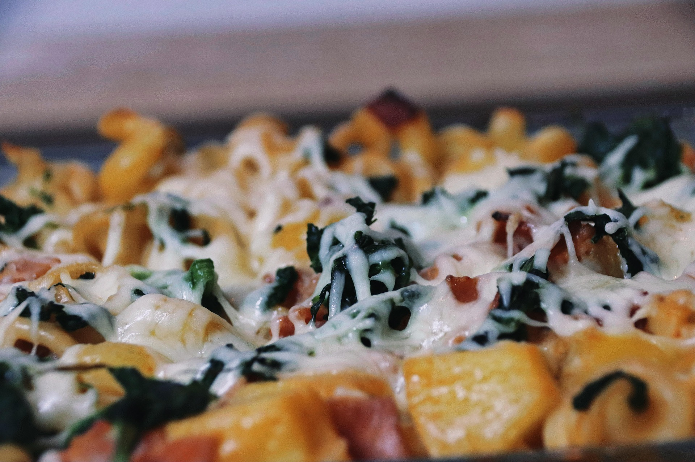

Gyros-Nudelauflauf in Metaxasoße

Zutaten für
| 500g Nudeln |
| 300g Käse |
| 300g Hackfleisch |
| 500g Champignons |
| 400g Spinat |
| 1 Zwibel(n) |
| 3 Knoblauchzehe(n) |
| 1 TL, gehäuft Gemüsebrühe, gekörnte |
| 1 TL, gestr. Oregano und Majoran |
| 2 ELOlivenöl |
| 2 große Ei(er) |
| Salz und Pfeffer |
| Muskat |
Zubereitung
Gurke waschen und ungeschält in dünne Scheiben oder Stücke schneiden. Paprika waschen, entkernen und in dünne Streifen schneiden. Tomaten waschen und achteln. Zwiebeln schälen und in feine Ringe schneiden. Schafskäse würfeln und mit Oregano bestreuen. Oliven abgießen und mit Gurke, Paprika, Tomaten, Zwiebeln und Schafskäse in eine Schüssel geben. Olivenöl, Zitronensaft, Salz und Pfeffer zu einer Sauce verrühren und über den Salat gießen. Umrühren.
Rezept erstellt von
 Nam
Nam